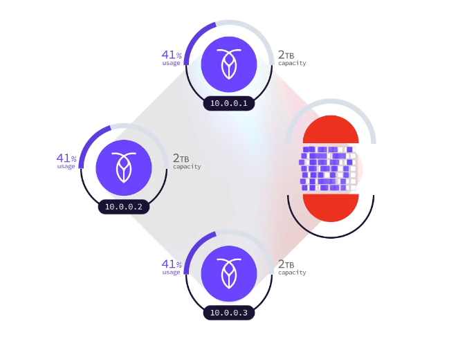
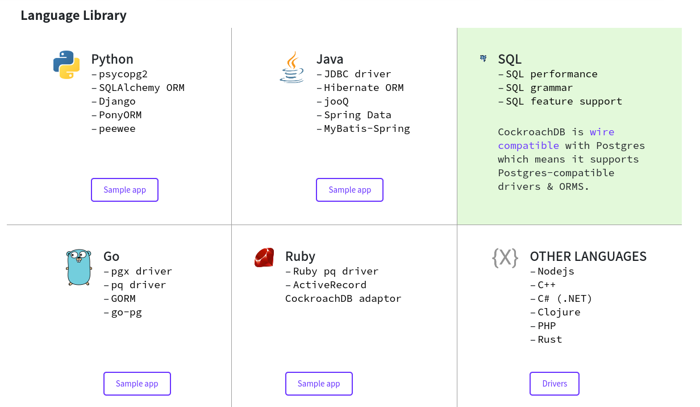

Pedro Rivera
Base de datos tipo SQL escalable de alta disponibilidad y resilencia
El api SQL se basa en postgresql
Crear una red
docker network create -d bridge roachnet
Nodo inicial que expone al servicio por el puerto 2657 y 8080
docker run -d \ --name=roach1 \ --hostname=roach1 \ --net=roachnet \ -p 26257:26257 -p 8080:8080 \ -v "${PWD}/cockroach-data/roach1:/cockroach/cockroach-data" \ cockroachdb/cockroach:v21.1.2 start \ --insecure \ --join=roach1,roach2,roach3
Nodos internos del cluster
docker run -d \ --name=roach2 \ --hostname=roach2 \ --net=roachnet \ -v "${PWD}/cockroach-data/roach2:/cockroach/cockroach-data" \ cockroachdb/cockroach:v21.1.2 start \ --insecure \ --join=roach1,roach2,roach3
Hacer que el primer nodo establezca la conexion con los demas, y desde el primer nodo se usa el cliente.
# iniciar cluster docker exec -it roach1 ./cockroach init --insecure # iniciar cliente docker exec -it roach1 ./cockroach sql --insecure
Gracias